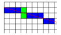

Diagonal/Skew Profiles¶
Diagonal or skew profiles introduce a number of inaccuracies, which is probably why none of the major vendors offer them. However, if these inaccuracies are understood then skew profiles may yield a lot of useful information. The problem is simple. Consider the following situation.
